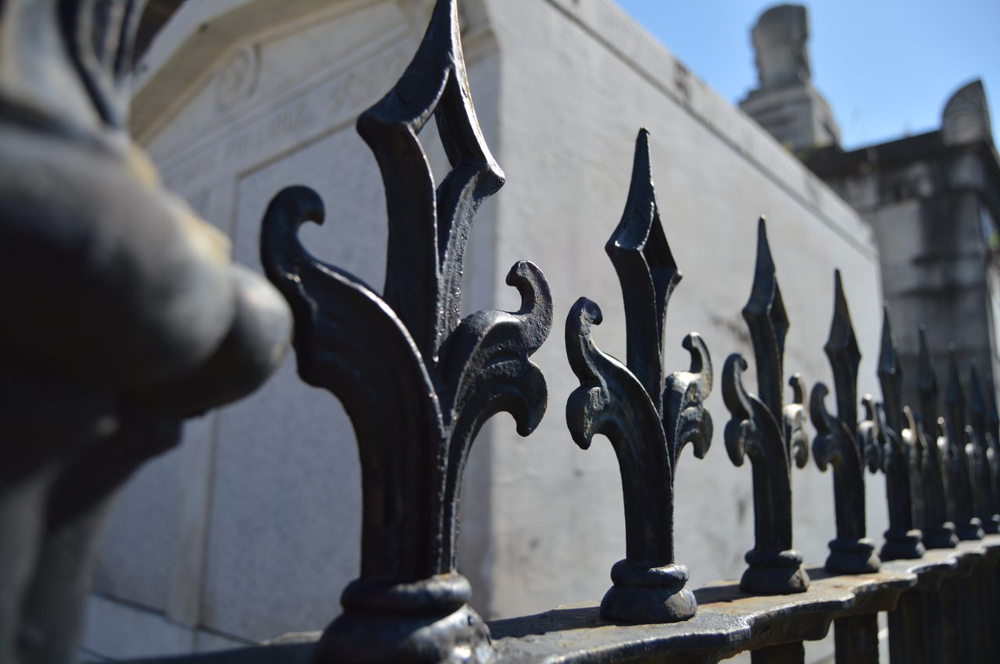

My name is Jesi Navarrete-Converse, I’m from Winston Salem, NC and I plan on majoring in both Criminal Justice and Psychology. I was inspired by multiple sources to choose these majors. These sources range from my own past experiences to things like TV and movies. Recently, my plans for the future have become less sure and set in stone.
One summer afternoon I was walking around the block with my grandmother when we got to passing my house again. This time, my grandmother wanted to go in and talk to my mom for a few minutes before we began walking around the block again. She told me to wait outside and watch her purse until she returned. A few minutes later, I was approached by a stranger who told me that he needed to speak to my mom and that he’d appreciate it if I’d go get her for him. Being only about six at the time, I didn’t think the situation through very well so I went and ran inside and got her. By the time we got outside, the stranger was gone and so was my grandmother’s purse. I had had other experiences with crime and criminals before this time but this is one of my most well defined memories from that long ago.
Sixth grade was a particularly pivotal moment in my decision to pursue some career in the field of law enforcement. I went to a middle school that was particularly more “at-risk” than the middle school and high school I went to afterwards. There were fights every day and a heavy influence of “gang culture” from just about everyone but the teachers. The people that I interacted with and learned from seemed to only give me examples of what I didn’t want to be. I got out of there and finished middle school in a much more calm and structured environment. That summer between the end of middle school and beginning of high school was one where I had a lot of time to do nothing. That’s not always a good thing, but in this instance, it served as a time for me to watch all kinds of shows. Normally, that’s probably not a good source of influence since TV shows tend to give an unrealistic look at what law enforcement is really like. It was very unrealistic, however, it did serve to push my interest in the direction that it is now. In high school, I took an AP psychology course and was very interested in the material but I was so set on a career in forensic biology that I didn’t even let myself consider taking psychology more serious.
I’ve switched my major a few times since I’ve been at Guilford, and although there weren’t any drastic changes, there were still switches due to uncertainties in what I wanted to do in the future. I came into Guilford under a criminal justice major, then I thought I wanted to go into forensic biology and work in labs, and after realizing that I didn’t have a passion for that, I figured I’d be much happier in the field of law enforcement where I’d be interacting with people more. From this change, I decided that I not only wanted to be a police officer, but that I also wanted to be homicide detective. According to my advisor, criminal justice and psychology are great fitting majors for anyone interested in being a police officer.
In my introduction, I mentioned that my future is not as set in stone as I once thought it was. I’ve come to the realization that not much is sure to happen and changing your mind is okay. I’ve realized that I’d like to be as sure as possible that I’d be able to get the job I want and be as prepared for that job as I can be so I’ve recently made some changes to my plans for the future. I want to go into the military after graduating. It’s something that I’ve been considering for a while but as I get closer to graduating, the more I become certain that I want to pursue this before I become a police officer. Yet, based on past experiences, I know that I can never be too certain on my plans and I must keep an open mind.
 Initial Perception Paper Cover Letter